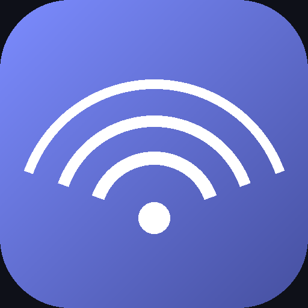

Интернет в машине включается сам
Садитесь за руль — телефон видит Bluetooth автомобиля и поднимает точку доступа. Без проводов, без ручных действий.
Скачать в RuStore Как это работает

АвтоточкаСадитесь за руль — телефон видит Bluetooth автомобиля и поднимает точку доступа. Без проводов, без ручных действий.
Скачать в RuStore Как это работает
Достаточно разрешения «Изменение системных настроек». Никаких прошивок и разблокировки загрузчика.
После перезагрузки телефона приложение стартует и продолжает следить за Bluetooth.
Имя Bluetooth-устройства, интервал поиска и таймаут отключения — всё меняется в одном экране.
На более новых версиях система может блокировать автоматическое включение.
Приложение попросит «Изменение системных настроек» — это стандартное разрешение Android.
Достаточно, чтобы телефон видел устройство по имени или адресу.
Нет. Приложение работает как обычное, пользуется разрешением на изменение системных настроек.
Зависит от прошивки. Проверка занимает минуту: установите, выдайте разрешение, подключитесь к машине. Если точка не поднялась — на этой прошивке автоматика недоступна, приложение честно об этом скажет.
Поиск Bluetooth идёт короткими сессиями с настраиваемым интервалом. Когда машины нет, приложение почти не расходует заряд.
Да. Устройством-триггером может быть любое Bluetooth-устройство: наушники, часы, колонка. Достаточно указать его имя в настройках.
Да, бесплатно, с небольшой рекламой.